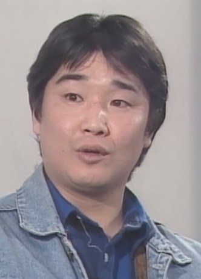
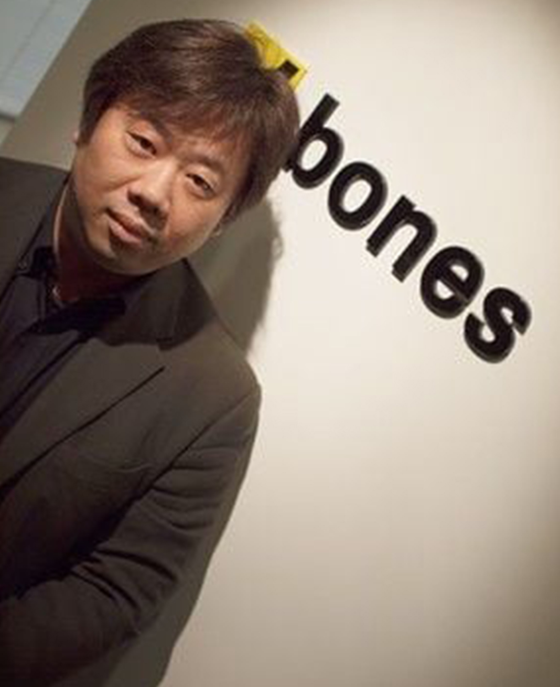

Masahiko Manamo

SBones was founded by Sunrise staff members Masahiko Minami, Hiroshi Ōsaka and Toshihiro Kawamoto in October 1998.[3] One of their first projects was collaborating with Sunrise on Cowboy Bebop: Knockin' on Heaven's Door, a feature film based on the Cowboy Bebop anime series.
According to Minami, the studio's name was chosen as a reference to its staff count at the time, which he described as being "like bones" while citing the desire to "work hard and put on some flesh".
In October 2024, Bones spun-off its production division under a separate, wholly owned subsidiary known as Bones Film. As such, all productions from 2025 onward are credited to Bones Film.
Hiroshi Osaka
Osaka was a Japanese animator, character designer and illustrator, born in Neyagawa, Osaka Prefecture. He was a graduate of the Kyoto Saga University of Arts. He was the co-founder of Bones.
Ōsaka, while studying in the Kyoto Saga University of Arts, joined the animation subcontracting studio Anime R in 1983 on a part-time basis under the apprenticeship of the noted animator Moriyasu Taniguchi, working on numerous Sunrise productions during this period in college.
During the spring of 2007, Ōsaka's health had deteriorated and spent his remaining days in his hometown of Neyagawa, Osaka Prefecture, where he had been staying at his family residence. He had been recuperating in a hospital in the city, where he later died of cancer on September 24, aged 44. His death was reported on several news outlets, including the blogs of his animator colleagues and major national newspapers, with numerous fans paying condolences.

Toshihiro Kawamoto

In 1998, he co-founded Bones with fellow Sunrise staff members Masahiko Minamiand Hiroshi Ōsaka.He has recently provided the character designs for Wolf's Rain and Tenpō Ibun Ayakashi Ayashi, and the key animation to series such as Eureka Seven, Witch Hunter Robin, Sword of the Stranger, Fullmetal Alchemist, Ouran High School Host Club and Michiko to Hatchin.
After graduating from college, he applied for a job at Group Donguri and was accepted.[1][3] In 1986, he made his debut in Yasuhiko's 1986 film Arion, where he was supervised by Yoshinobu Inano and mentored by the lead character designer Sachiko Kamimura, with whom he later collaborated on numerous productions, including being her assistant in Venus Wars, which was also directed and written by Yasuhiko.
In 1998, he co-founded Bones with fellow Sunrise staff members Masahiko Minamiand Hiroshi Ōsaka.

Maka Albarn
Maka Albarn is the main protagonist of the manga/anime series Soul Eater. She is a student at the Death Weapon Meister Academy and a Scythe Meister. Her weapon partner is Soul Eater Evans and she wants to become a better meister just like her mother and strives to make Soul into a Death Scythe.

Soul Evans
Soul Eater Evans or just 'Soul' to his friends is the main male protagonist and the overall main protagonist of the manga/anime series Soul Eater and Maka Albarn's partner. He is also part of the group called Spartoi.

Franken Stein
Franken Stein is an eccentric but extremely talented doctor and Meister who is known to be the strongest Meister to have graduated from Death Weapon Meister Academy and formerly Spirit Albarn's first weapon-partner.

Spirit Albarn
Spirit Albarn is a major protagonist of the anime/manga series Soul Eater. He is a Demon Weapon, a human that has the ability to transform into a weapon to be wielded by a Meister. In Spirit's case, he can transform into a scythe. First wielded by Franken Stein, he becomes a Death Scythe with the help of his second Meister, Maka's mother.